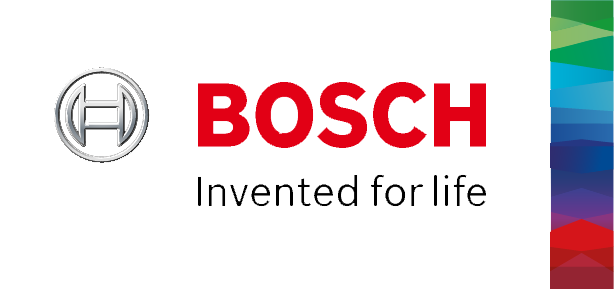

CertifiCar bietet datengetriebene Echtzeitzertifikate.
Sie können sicher sein, dass bestimmte Daten nicht nachträglich manipuliert wurden. Damit haben Sie mehr Sicherheit beim Gebrauchtwagenkauf. Die Datenquellen werden in Zusammenarbeit mit dem TÜV Rheinland zertifiziert. Die Datenintegrität wird durch Blockchain Technologie gewährleistet
Daten mit CertifiCar Garantie werden durch das  Symbol gekennzeichnet. Für mehr Informationen klicken Sie auf "Einblenden"
Symbol gekennzeichnet. Für mehr Informationen klicken Sie auf "Einblenden"
